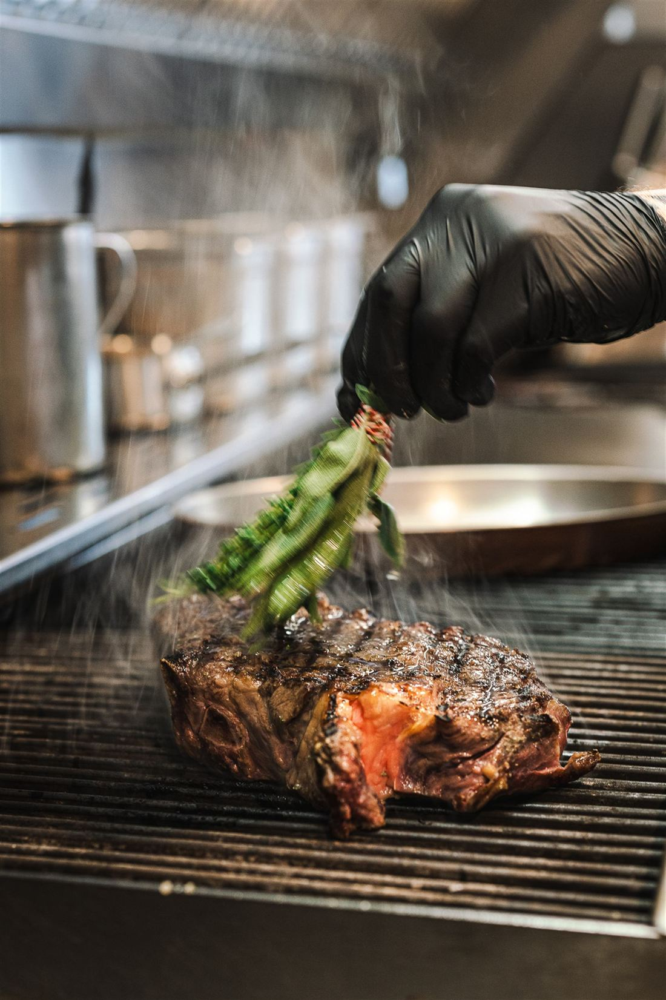
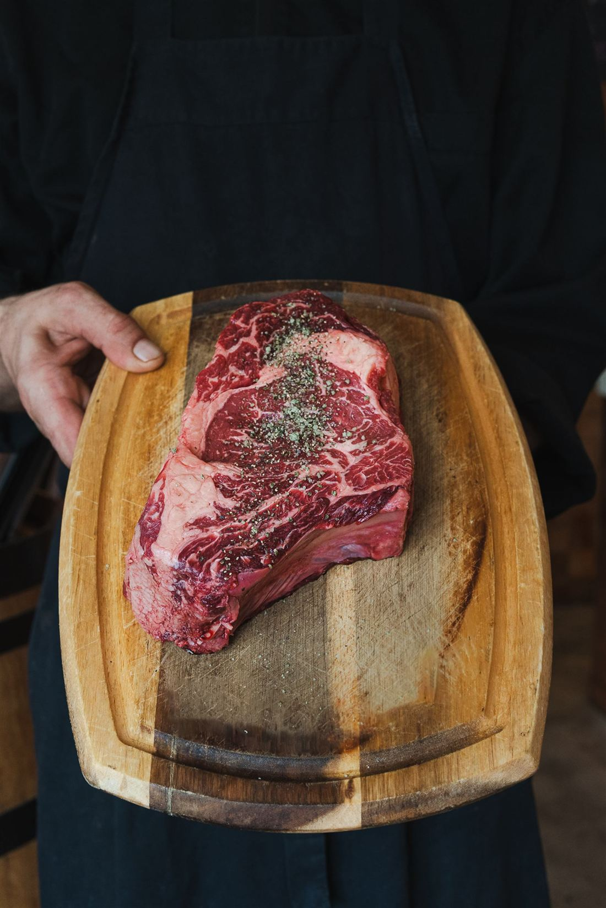
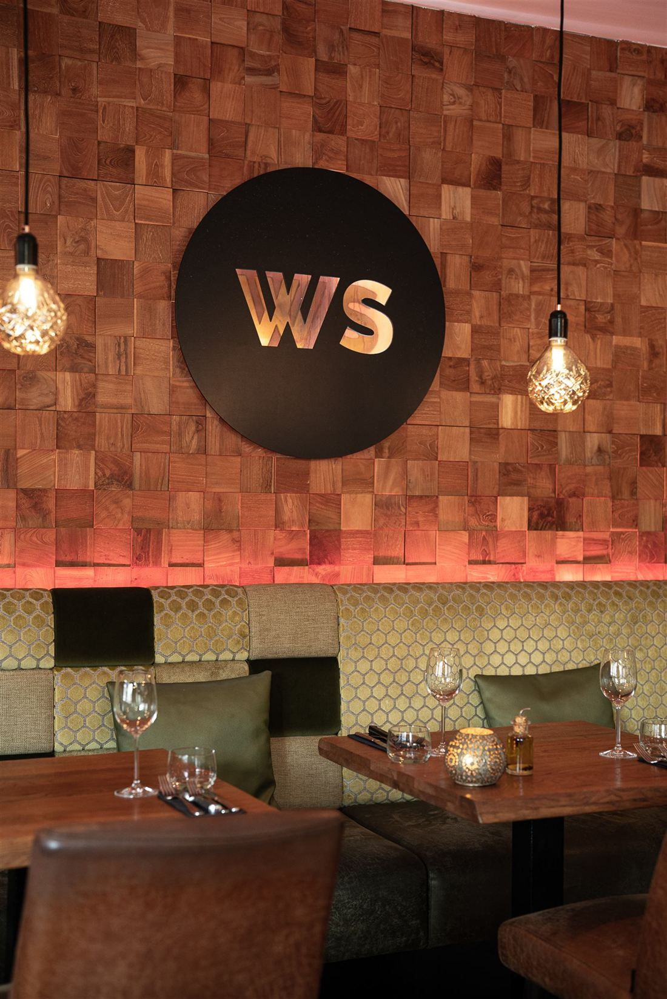
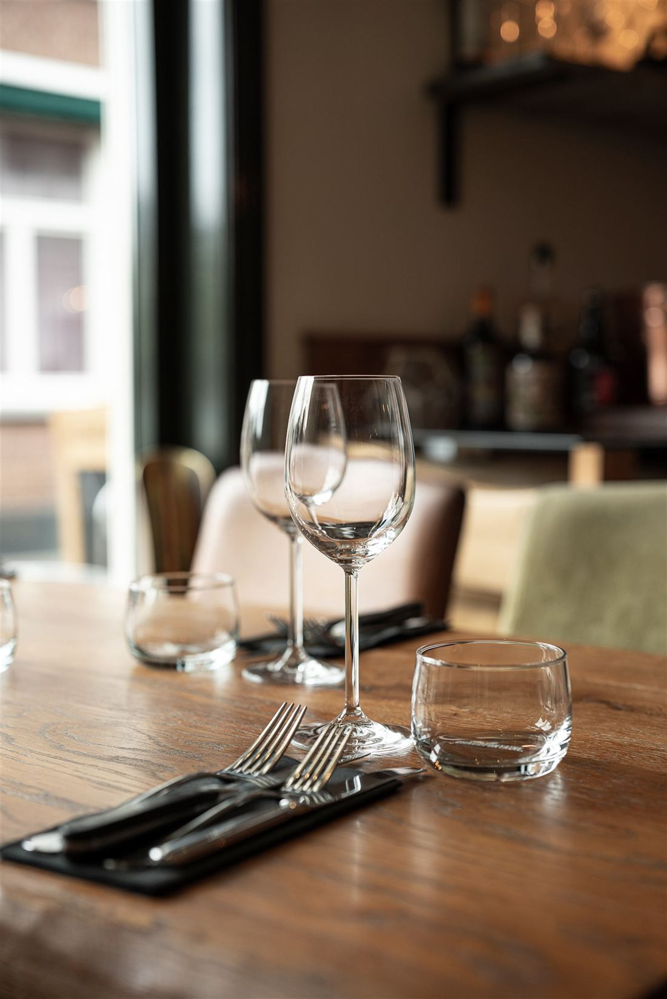
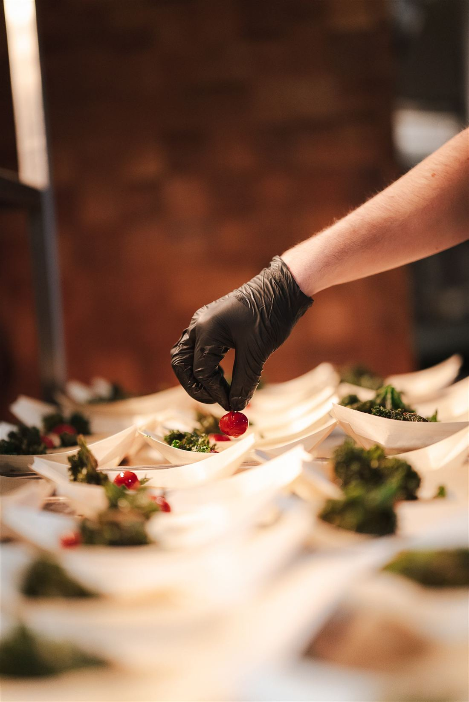

Bar & grill in de Peperstraat, Oss
Het allermooiste stuk vlees, a la minute van de grill.
Bij Woodstock draait alles om smaak, beleving en een vleugje eigenzinnigheid. De geur van de keuken komt je al tegemoet, de sfeer is ontspannen en het eten altijd met zorg bereid.
Elke dag open van 17.00 tot 23.00 uur


Welkom bij Woodstock
Met een pure passie voor verse ingrediënten en een liefde voor goed eten heten we je van harte welkom in ons restaurant.
Inmiddels staat Woodstock op de kaart voor een super mooi stuk vlees van de grill. A la minute gebakken, puur natuur. Uitgesneden in alle maten en soorten kopen we iedere week weer steaks in, die door onze gasten zeer gewaardeerd worden.
Zij blij, wij blij… de chemie van een avondje uit eten met een huiselijke gezelligheid.


“Ik ben bijzonder trots dat we in de gezellige Peperstraat van Oss om onze heerlijke steaks bekend staan. Tot snel!”Stephan Silver
Pure passie voor goed eten en gastvrije beleving
Bourgondiërs pur sang. Bij Woodstock proberen we een relaxte, huiselijke sfeer te creëren waar alle mensen welkom zijn: informeel, met eerlijk eten en een enthousiaste bediening. Sommigen kiezen voor een snel gerecht, de ander blijft wat langer hangen voor nog een afterborrel aan de bar.
Waar liefde de tafel dekt, smaakt eten het best.

Woodstock afhuren
Op zoek naar een unieke locatie? Ons restaurant is volledig af te huren en afgestemd op jouw wensen. Van een luxe meergangenmenu tot een feestelijk aangeklede babyshower: alles wordt met zorg en oog voor detail geregeld.
- Private dinner
- Zakelijk diner
- Babyshower
- Events
- Speciale gelegenheden
- Eten
- Ambacht en creativiteit: huisgemaakte gerechten met de verste ingrediënten, verrassende smaken en een persoonlijke touch.
- Setting
- De sfeervolle ambiance van Woodstock, met aandacht voor elk detail.
- Wensen
- Een speciaal verzoek? Laat het ons weten, vrijwel alles is mogelijk in overleg.
Geef de Woodstock-experience
Op zoek naar een cadeau voor een vleesliefhebber? Met een cadeaubon van Woodstock geef je een avond genieten van een goede steak, in een aangename sfeer en met een gepassioneerd team.
Woodstock-cadeaubonnen zijn in de zaak te koop van donderdag tot en met maandag.
We werken met de groene papieren cadeaubonnen (ansichtkaart). De houten cadeaubonnen namen we aan tot 1 juli 2024. Peperstraat-cadeaubonnen nemen we op dit moment niet aan.
Werken bij Woodstock
Niet kletsen maar koken. Zin om onze gastvrijheid uit te dragen? We zoeken collega’s.
Keukenprins(es), 4 dagen / 32 uur
Een creatieveling die zelfstandig onze koude keuken vult met inspiratie en enthousiasme. Basistechnieken van een kok heb je in huis (snijtechnieken, productkennis, HACCP en inzet). Vlees uitsnijden, schoonmaken en perfect grillen kun je bij ons leren. Herintreder, kok in opleiding of toe aan een andere baan: welkom. Kernwoorden: creatief, ijverig, zelfstandig, zonder vergadercultuur. Op z’n tijd volop aan de bak, maar ook aansluitende dagen vrij.
Bediening, 1 of 2 avonden per week
Wil jij één of twee avonden in de week werken en onze gasten verwennen met gastvrijheid? Dan zoeken we jou.
Interesse? Mail info@woodstockoss.nl of bel 06-10945918.
Kom langs
Openingstijden
| Maandag | 17.00 – 23.00 |
| Dinsdag | 17.00 – 23.00 |
| Woensdag | 17.00 – 23.00 |
| Donderdag | 17.00 – 23.00 |
| Vrijdag | 17.00 – 23.00 |
| Zaterdag | 17.00 – 23.00 |
| Zondag | 17.00 – 23.00 |
Met de kerstdagen, oud en nieuw en carnaval zijn we gesloten. Actuele updates vind je op Facebook.
Adres en reserveren
- Peperstraat 22, 5341 CZ Oss
- Reserveer telefonisch: 06-10945918
- info@woodstockoss.nl
- Online reserveren
- Plan je route
Parkeren
Tegenover het restaurant: de kleine parkeerplaats aan de zijkant van de Grote Kerk, recht tegenover Woodstock. Tot 18.00 uur betaald parkeren.
Achter de Hema: voldoende ruimte en een korte wandeling door het centrum van Oss. Tot 18.00 uur betaald parkeren.
Meer mogelijkheden op Prettig Parkeren Oss.